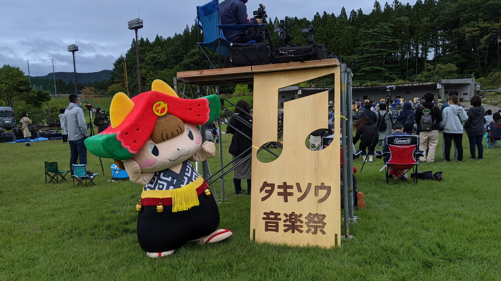

<!DOCTYPE html>
<html lang="ja">

<head>
    <meta charset="utf-8">
    <meta name="viewport" content="width=device-width, initial-scale=1.0">
    <meta name="description" content="ナブカツ用のウェブサイトです。基本的なウェブのフロントエンドの書き方、JavaScriptの書き方を学びます。">
    <meta name="keyword" content="ナブカツ,横須賀,ポートフォリオ,ウェブサイト,プログラミング,フロントエンド,学習,イトナブ">
    <title>ナブカツLab</title>
    <link rel="stylesheet" href="https://cdnjs.cloudflare.com/ajax/libs/Swiper/4.5.0/css/swiper.min.css">
    <link href="https://fonts.googleapis.com/css2?family=Caveat&display=swap" rel="stylesheet">
    <link rel="stylesheet" href="css/style.css">
</head>

<body>
    <header id="site-header">
        <h1 id="site-logo"><a href="">LOGO</a></h1>
        <nav>
            <ul id="nav-menu">
                <li class="nav-menu-items"><a href="#profile">Profile</a></li>
                <li class="nav-menu-items"><a href="#works">Works</a></li>
                <li class="nav-menu-items"><a href="#access">Access</a></li>
                <li class="nav-menu-items"><a href="#promotion">Promotion</a></li>
            </ul>
        </nav>
    </header>

    <div class="swiper-container">
        <div class="swiper-wrapper">
            <div class="swiper-slide"></div>
            <div class="swiper-slide"></div>
            <div class="swiper-slide"></div>
        </div>
        <div class="top-title">Let's enjoy Takizawa!</div>
    </div>

    <div class="description-text">
        <p>ナブカツ用のポートフォリオサイトです。</p>
        <p>基本的なウェブフロントエンドの学習をします。</p>
    </div>

    <hr class="rule" id="profile">
        <h2 class="sub-title">〜 Profile 〜</h2>
        <div class="profile">
            <div id="profile-img">
                
            </div>
            <div id="profile-text">
                <p>ゆっきー（本名：佐々木 優気）/ 1999年生まれ / 魚座 / A型</p>
                <p>岩泉町出身 / 高校を卒業後、岩手県立大学に入学。</p>
                <p>父親の影響で地方公務員に関心。大学では行政法を専攻。</p>
                <p>現在は動画編集やグラフィックデザインを中心に、地域の営みを支える活動をしている。</p>
                <p>好きなもの：Geoguessr / eSports / アニメ / 筋トレ / 海鮮料理</p>
                <p>苦手なもの：人混み</p>
            </div>
        </div>
    <hr class="rule" id="works">
        <h2 class="sub-title">〜 Works 〜</h2>
        <div class="works">
            <div class="work">
                <h3 class="work-title">Photo montage</h3>
                
                <p>
                    モバイルゲームアプリなどの背景（建物）やクライアントサイトの挿絵などの制作を行なっています。<br>また、キャラクターデザインやイベントのフライヤー制作なども行いました。
                </p>
            </div>
            <div class="work">
                <h3 class="work-title">Programming</h3>
                
                <p>
                    CoronaSDKを使って2D系のゲームの制作、Unityを使って3D系のゲームの制作を行なっています。<br>また、CSSフレームワークを使用してのWebフロントエンド開発も行なっています。
                </p>
            </div>
            <div class="work">
                <h3 class="work-title">Cuisine</h3>
                
                <p>
                    主に中学生から大学生を中心にプログラミングの出張授業などを行なっています。<br>教える内容は、CoronaSDKやWebフロントエンド開発がメインです。
                </p>
            </div>
        </div>

        <div id="book-img"></div>

    <hr class="rule" id="access">
        <h2 class="sub-title">〜 Access 〜</h2>
        <div class="access">
            <div id="access-text">
                <p id="place-name">滝沢市</p>
                <p>〒020-0692</p>
                <p>岩手県滝沢市中鵜飼55</p>
                <br>
                <p>Tel：<a href="tel:000-1234-5678">000-1234-5678</a></p>
                <p>Web：<a href="http://www.city.takizawa.iwate.jp">www.city.takizawa.iwate.jp</a></p>
            </div>
            <iframe src="https://www.google.com/maps/embed?pb=!1m18!1m12!1m3!1d98111.95876317869!2d141.01435149527427!3d39.78458429902606!2m3!1f0!2f0!3f0!3m2!1i1024!2i768!4f13.1!3m3!1m2!1s0x5f85722d6777d699%3A0x3ab0838e261f6f4a!2z5bKp5omL55yM5rud5rKi5biC!5e0!3m2!1sja!2sjp!4v1611537952240!5m2!1sja!2sjp" 
            width="600" height="450" frameborder="0" style="border:0;" allowfullscreen="" aria-hidden="false" tabindex="0">
            </iframe>
        </div>
    
    <hr class="rule" id="promotion">
        <h2 class="sub-title">〜 Promotion 〜</h2>
        <div class="promotion">
            <iframe width="560" height="315" src="https://www.youtube.com/embed/hX55GfQtcwM" 
            frameborder="0" allow="accelerometer; autoplay; clipboard-write; encrypted-media; gyroscope; picture-in-picture" allowfullscreen>
            </iframe>
        </div>

    <hr class="rule" id="radio">
        <h2 class="sub-title">〜 Radio 〜</h2>
        <div class="radio">
            <div class="radioContent">
                <p class="contentTitle">滝沢市役所ちゃんねるのラジオを企画制作しています！</p>
                <iframe width="560" height="315" src="https://www.youtube.com/embed/videoseries?list=PLBLqbb5x7EmII6sORGtnBeKSWc3_0a80l" 
                frameborder="0" allow="accelerometer; autoplay; clipboard-write; encrypted-media; gyroscope; picture-in-picture" allowfullscreen>
                </iframe>
            </div>
        </div>


    <footer id="site-footer">
        <p id="copyright"><small>&copy; 2019 Itnav</small></p>
    </footer>

    <script src="https://cdnjs.cloudflare.com/ajax/libs/Swiper/4.5.0/js/swiper.min.js"></script>
    <script src="js/main.js"></script>
</body>

</html>